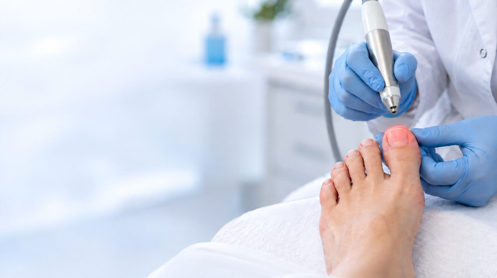

Hongos en la uña y lesiones de la piel, sin dolor y sin cirugía
El láser de diodo actúa por calor sobre el tejido que queremos tratar: eleva la temperatura en el interior de la uña o de la lesión lo justo para destruir el hongo o el tejido afectado, sin dañar la piel de alrededor.
Es la alternativa a los tratamientos que se prolongan durante meses sin resultado y a las intervenciones más agresivas. No requiere anestesia en la mayoría de los casos, no deja herida y puedes calzarte y seguir con tu día al salir de la consulta.
Antes de aplicarlo confirmamos el diagnóstico: no toda uña amarillenta es un hongo, ni toda lesión plantar es una verruga. Solo así el tratamiento tiene sentido.
En nuestra clínica de podología en el centro de Murcia aplicamos el láser de diodo en la propia consulta.
Onicomicosis: uñas amarillentas, engrosadas o quebradizas. El láser llega donde no llegan los esmaltes y las cremas.
Lesiones víricas resistentes o muy dolorosas al pisar, incluidas las que han recidivado con otros tratamientos.
Cuando el borde de la uña se clava una y otra vez, el láser ayuda a resolver la inflamación del tejido y a evitar recaídas.
01
Confirmamos el tipo de lesión y valoramos si el láser es la opción indicada en tu caso.
02
Fresamos la uña o retiramos el tejido superficial para que el láser actúe en profundidad.
03
Aplicación breve, con sensación de calor. Al terminar puedes calzarte y caminar con normalidad.
04
El número de sesiones depende de la lesión. Controlamos la evolución hasta el alta.
El resultado en la uña se ve a medida que esta crece sana, por lo que la mejoría es progresiva a lo largo de varios meses. En la primera visita valoramos tu caso y te indicamos cuántas sesiones serán previsiblemente necesarias.
Pide una valoración de tu uña sin compromiso.
968 23 19 64